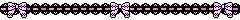

Free open/easy access online resources for various interests that I want to share with people. My list of anime drawing resources can be found here. Most of these are websites or books that are older and/or somewhat obscure; the sort of sites that are only found on specific searches.
Wildflowerfinder UK - Detailed website that allows you to search/identify wildflowers from the United Kingdom.
Nativeflower - Another site for native flowering plants of the United Kingdom. Contains helpful pictures and diagrams about the structure of particular flowers of ease of identification.
US Wildflowers - Detailed American wildflower database that allows you to search by state. Plenty of pictures.
USDA Wildflower Links - Page run by US Forest Service with links to a ton of sites dealing with native American flowers. Several of the linked sites are state specific.
Flower Database - Database of flowers with a feature to search for flowers associated with particular birth months. This website is also available in Japanese and Chinese.
Glossary of Botanical Terms - Glossary of botanical terminology run by The Western Australian Herbarium.
A.k.A the humanities section.
The Victorian Web - Longstanding academic website about all things victorian. Tons of good, in depth articles.
At The Circulating Library - Victorian fiction database with over 24,000 titles. Has a feature that allows you to search by genre and find digitized copies of texts online.
Historic Boy's Clothing - Website covering (western) historical boy's clothing with plenty of pictures. The articles have some typos but the information is accurate.
Boy's School Uniforms (archived) - Website covering the history of boy's school uniforms in the United Kingdom specifically. Now only accessible via the Wayback Machine but most of the pictures still work.
HathiTrust - Website with digitized copies of 1000s of public domain books.
Redeeming Qualities - Blog that reviews obscure public domain popular fiction. Last updated in December of 2023 so (probably) still being maintained.
The Project Gutenberg Project - Similar to Redeeming Qualities in that it's a blog focused on obscure public domain books, but the reviews here are submitted by various different bloggers. Last updated in 2017 so it's pretty safe to say that they're no longer active but their backlog is large.
Medieval and Modern Bestiary - Joint blog project run by a medievalist and an artist covering monsters from the middle ages. Cool illustrations.
The Beastiary - Another site that covers medieval depictions of animals as well as mythological creatures from medieval manuscripts. Very in depth with lots of pictures.
Antique Spectacles (archived) - An interesting site that covers the history of glasses and other vision aids. Lots of pages and pictures.
Charles Dickens Info - Website all about Charles Dickens and his works. Recently updated as of being added to this page.
Old Book Illustrations - View and download hundreds of public domain book illustrations.
The Online Books Page - Find free copies of books online.
The Phrontistery - Website based around old and obscure words, some of which are not found anywhere else on the internet.
Charlotte M Yonge Fellowship - Website all about victorian author Charlotte Mary Yonge, her life and works, etc. Contains a large (yet still incomplete) database of her works and where to read many of them online.
Behind the Name - Site that gives origins, etymologies, and variants for various (mostly western) given names. With an account you can save and rate names, as well as participate in forum discussions.
Dogs Playing Poker - A website based entirely around those kitschy old paintings of dogs playing poker.
History of Pencils - A website dedicated entirely to the history of pencils.
Old Book Illustrations - Free to use public domain book illustrations galore. Humans, animals, architecture, patterns, letters, black and white, color, etc.
Geograph UK - A collaborative project which aims to photograph every square kilometer of the United Kingdom and Ireland. Online since 2006, it currently hosts over 8 million photos.
TimeTravel Britain - A website documenting various historical sites throughout the United Kingdom. No longer being updated but there are many interesting articles and plenty of pictures.
I've Sound Explorer - Fanmade Japanese I've Sound song and artist database. The most recent update appears to have been in 2021 but the information up to that point is good.
I've Sound International - English language I've Sound fansite. Up to date as of being added to this page.
I've no Kashi - Blog with English translated and Romaji lyrics for some I've Sound songs, mostly more recent ones. Last updated in 2021 so I'm not sure if they're still active.
Anime Lyrics - Site with Japanese, Romaji and English translated lyrics for anime, video game, vocaloid and j-pop songs (particularly ones from the 00s). Has a feature that allows you to get the definitions of kanji characters in lyrics.
Hatsune Miku Atwiki - Very comprehensive Japanese language vocaloid wiki.
Nonfiction & reference books about various subjects. You need a (free) Internet Archive account to digitally borrow and read these books.
The History Of The Snowman - A humorously written yet accurate and informative investigation into the history of one of the worlds most ubiquitous cultural icons, the snowman. Published in 2007 but the information is still accurate.
The Lore And Legends of flowers - Book about the cultural associations of several well-known flowering plants over the centuries.
Blazers, Badges and Boaters: A Pictorial History of School Uniform - Book about the history of school uniforms in the United Kingdom. Lots of pictures.
Boys will be girls: the feminine ethic and British children's fiction, 1857-1917 - Book about depictions of gender and gender roles in victorian (and somewhat later) children's fiction. Really in depth exploration of the topic.
Kitsch in sync: a consumer's guide to bad taste - Book about kitsch in various forms, from interior design, to film, music etc. Lots of pictures.
Miscellaneous hobby and subculture related links go here.
Dollbooru (archived) - Old doll picture booru site, mainly with pictures of anime style dolls like azones and dollfies. Generally safe-for-work.
Setsunakou - A site selling and showcasing custom anime dolls. I'm not sure if you can still actually place orders there but the pictures are nice to look through.
How To Dance by EKS-D ParaPara - An introductory guide to learning how to do basic Japanese Parapara dances to Eurodance, Techno, Eurobeat, etc. music.
Yukkuri Talk - The original Yukkuri text-to-speech site.